Acetoacetic-Ester Condensation: Claisen Condensation
The Claisen Condensation between esters containing α-hydrogens, promoted by a base such as sodium ethoxide, affords β-ketoesters. The driving force is the formation of the stabilized anion of the β-keto ester. If two different esters are used, an essentially statistical mixture of all four products is generally obtained, and the preparation does not have high synthetic utility.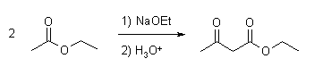
Mechanism of the Claisen Condensation
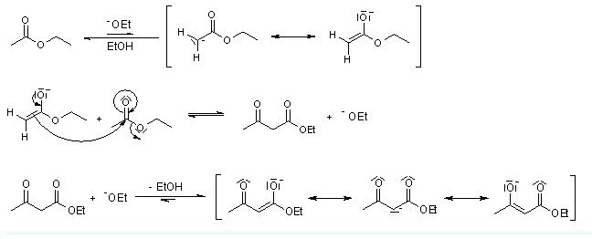
The intramolecular version is known as Dieckmann Condensation.
Dieckmann Condensation
The base-catalyzed intramolecular condensation of a diester. The Dieckmann Condensation works well to produce 5- or 6-membered cyclic ß-keto esters, and is usually effected with sodium alkoxide in alcoholic solvent.
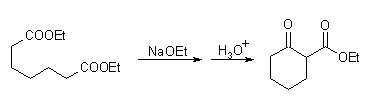
Aldol Reaction
'Aldol' is an abbreviation of aldehyde and alcohol. When the enolate of an aldehyde or a ketone reacts at the α-carbon with the carbonyl of another molecule under basic or acidic conditions to obtain β-hydroxy aldehyde or ketone, this reaction is called Aldol Reaction. 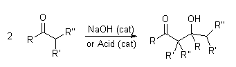Mechanism of the Aldol Reaction:
Base Catalyzed:
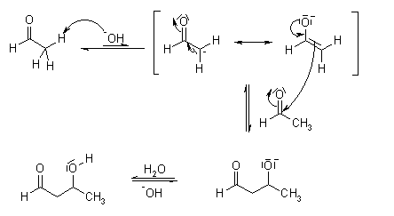
Acid Catalyzed:
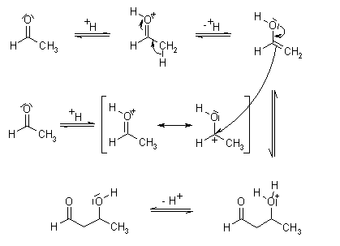
Acyloin Condensation
The bimolecular reductive coupling of carboxylic esters by reaction with metallic sodium in an inert solvent under reflux gives an α-hydroxyketone, which is known as an acyloin. This reaction is favoured when R is an alkyl. With longer alkyl chains, higher boiling solvents can be used.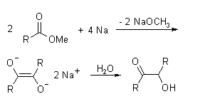
Mechanism of Acyloin Condensation:
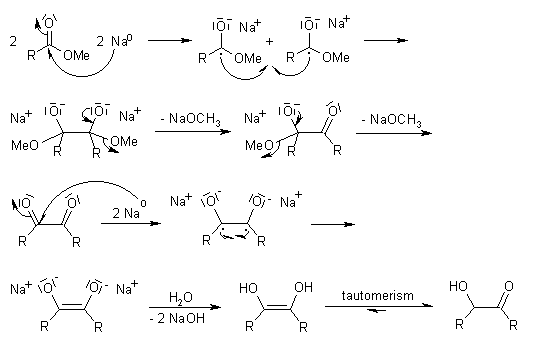
Arndt-Eistert Synthesis
The Arndt-Eistert Synthesis allows the formation of homologated carboxylic acids or their derivatives by reaction of the activated carboxylic acids with diazomethane and subsequent Wolff-Rearrangement of the intermediate diazoketones in the presence of nucleophiles such as water, alcohols, or amines.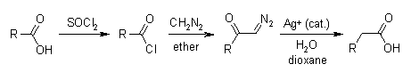
Mechanism of the Arndt-Eistert Synthesis:
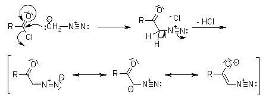
Azo Coupling Reaction
Azo coupling is the most widely used industrial reaction in the production of dyes, lakes and pigments. Aromatic diazonium ions acts as electrophiles in coupling reactions with activated aromatics such as anilines or phenols. The substitution normally occurs at the para position, except when this position is already occupied, in which case ortho position is favoured. The pH of solution is quite important; it must be mildly acidic or neutral, since no reaction takes place if the pH is too low.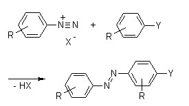
For Example,
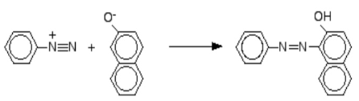
Mechanism (using Alpha Napthol):
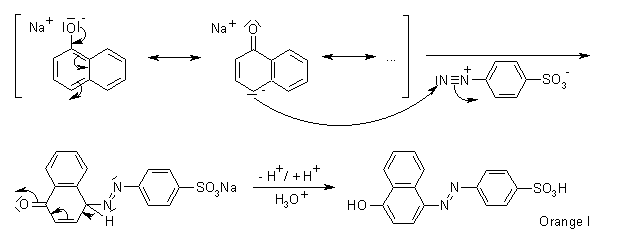
Baeyer-Villiger Oxidation
The Baeyer-Villiger Oxidation is the oxidative cleavage of a carbon-carbon bond adjacent to a carbonyl, which converts ketones to esters and cyclic ketones to lactones. The Baeyer-Villiger can be carried out with peracids, such as MCBPA, or with hydrogen peroxide and a Lewis acid.The regiospecificity of the reaction depends on the relative migratory ability of the substituents attached to the carbonyl. Substituents which are able to stabilize a positive charge migrate more readily, so that the order of preference is: tert. alkyl > cyclohexyl > sec. alkyl > phenyl > prim. alkyl > CH3. In some cases, stereoelectronic or ring strain factors also affect the regiochemical outcome.
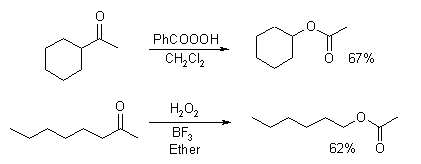
Mechanism of the Baeyer-Villiger Oxidation
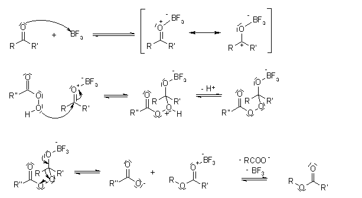
Balz-Schiemann Reaction
The conversion of aryl amines to aryl fluorides via diazotisation and subsequent thermal decomposition of the derived tetrafluoroborates or hexafluorophosphates. The decomposition may also be induced photochemically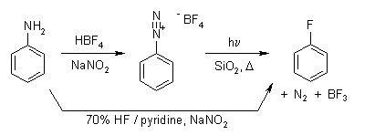
Mechanism of Balz-Schiemann Reaction
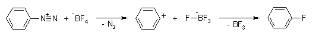
Beckmann Rearrangement
An acid-induced rearrangement of oximes to give substituted amides.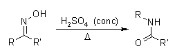
Mechanism of Beckmann Rearrangement
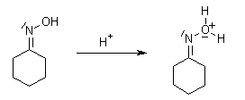
Oximes generally have a high barrier to inversion, and accordingly this reaction is envisioned to proceed by protonation of the oxime hydroxyl, followed by migration of the alkyl substituent "trans" to nitrogen.
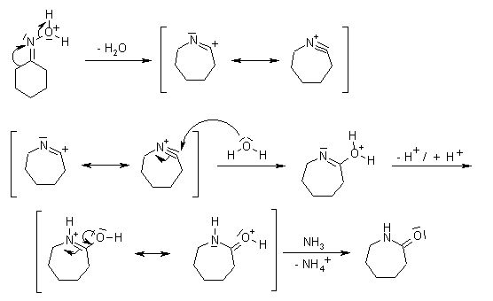
Benzilic Acid Rearrangement
1,2-Diketones undergo a rearrangement in the presence of strong base to yield α-hydroxycarboxylic acids. The best yields are obtained when the subject diketones do not have enolizable protons.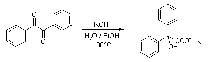
The reaction of a cyclic diketone leads to an interesting ring contraction:
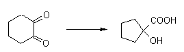
Mechanism of Benzilic Acid Rearrangement
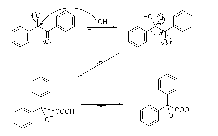
Benzoin Condensation
The Benzoin Condensation is a coupling reaction between two aldehydes that allows the preparation of α-hydroxyketones.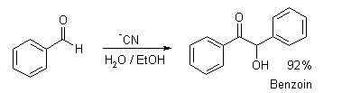
Mechanism of Benzoin Condensation 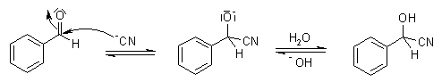
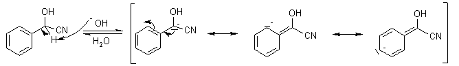
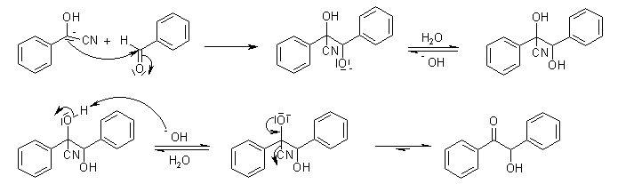
Birch Reduction
The Birch reduction is an organic reaction that is used to convert arenes to 1,4-cyclohexadienes. It involves the organic reduction of aromatic rings in an amine solvent (traditionally liquid ammonia) with an alkali metal (traditionally sodium) and a proton source (traditionally an alcohol).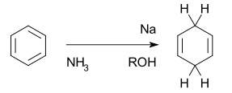
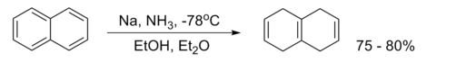
Mechanism of Birch Reduction 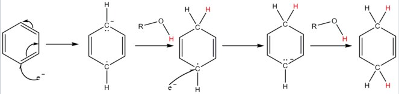
Bouveault–Blanc reduction
The Bouveault–Blanc reduction is a chemical reaction in which an ester is reduced to primary alcohols using absolute ethanol and sodium metal.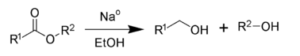
Mechanism of Bouveault–Blanc reduction 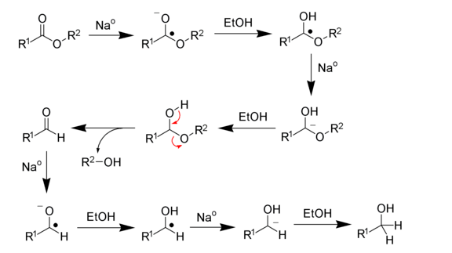
Cannizzaro Reaction
The Cannizzaro reaction is a chemical reaction which involves the base-induced disproportionation of two molecules of a non-enolizable aldehyde to give a primary alcohol and a carboxylic acid.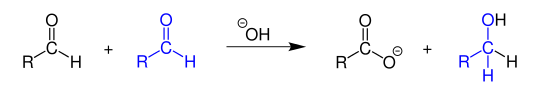
Mechanism of Cannizzaro Reaction 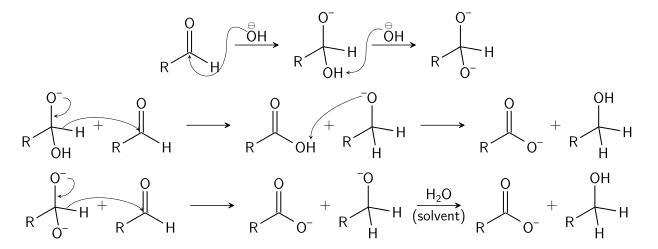
Clemmensen Reduction
Clemmensen reduction is a chemical reaction described as a reduction of ketones or aldehydes to alkanes using zinc amalgam and concentrated hydrochloric acid (HCl).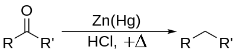
Mechanism of Clemmensen Reduction